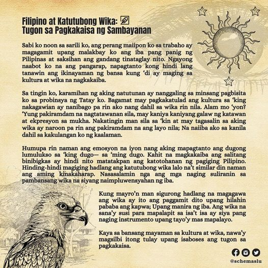
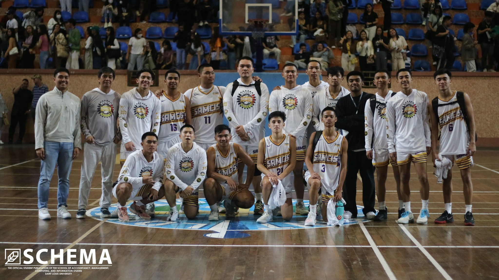
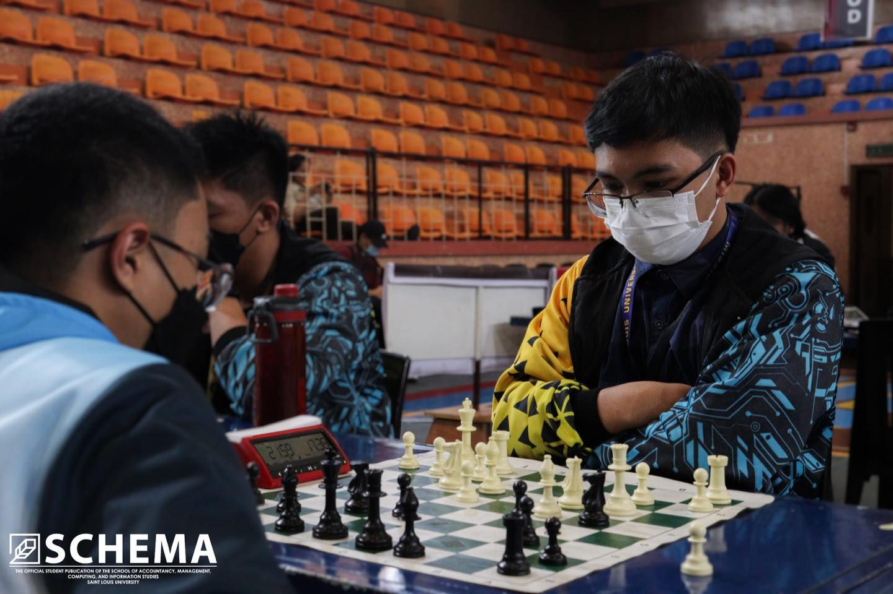

NEWS

SAMCIS first-years attend their programs' orientations
By Alyanna Lawrice Rasing · August 16, 2023
As the new academic year starts, the freshmen of the School of Accountancy, Management, Computing, and Information Studies (SAMCIS) convened for the first day of the Program-Based Freshmen Orientation at the Devesse Audio Visual Room (AVR) today, August 16.

Baguio City Youth groups march their way for ML51
By Joana Mae Gomez · September 22, 2023
With the theme “Martial Law Noon, Terror Law Ngayon,” the 51st Commemoration of Martial Law filled the roads of Baguio City with hundreds of students and activists from local and university-wide organizations last September 21, Thursday.

Executive Committee calls for '23-'24 KASAMA/SSC 1st Gen Assembly
By Axa Gwen Dao-ilang · October 19, 2023
Setting off their term productively, the Executive Committee of the Kataas-taasang Sanggunian ng mga Mag-aaral/Supreme Student Council (KASAMA/SSC) called for their first General Assembly yesterday, October 18, at the AVR (Room D-308), Rizal Building, Main Campus.
OPINION
By Laika Beta-a · September 21, 2023
Five decades have passed since the Martial Law and, every year we commemorate the era that has brought fear, blood, and violation to many Filipinos. Five decades might have passed, but the same Marcos name still sits in Philippine Politics. With the same family in power, are the current implementations another political agenda to empower the Marcoses?
Breathe
By Graeven Yuri Videz · May 31, 2020
On the 25th of May 2020, a man walked into a grocery store and bought a pack of cigarettes.
Thirty minutes and a suspected fake 20-dollar bill later, George Floyd lost his life to police officer Derek Chauvin.
The case of George Floyd is, sadly, nothing new. The world has been struggling with racism for a long amount of time, almost as long as history itself—wars, colonization; all of these are a large and unfortunate part of humanity’s past.
FEATURES


Grief At Its Truest Form
By Laika Beta-a · October 30, 2023
The month of remembering the death of our loved ones is slowly approaching, the pain of remembering their passing will again inflict pain on us. To live with grief is a struggle to accept or reject what is out of our control. As acceptance is not mandatory, there is healing in exploring these feelings.

Filipino sa Katutubong Wika: Tugon sa Pagkakaisa ng Sambayanan
By Trisha May Gonzaga · August 19, 2023
Sabi ko noon sa sarili ko, ang perang maiipon ko sa trabaho ay magagamit upang malakbay ko ang iba pang panig ng Pilipinas at saksihan ang gandang tinaglay nito.

Wika ng Kapayapaan, Seguridad, at Ingklusibong Pagpapatupad ng Katarungang Panlipunan
By Leila Gwen Aspiras · August 5, 2023
Sa bansa nating may isang daan at mahigit na wika, paano nga ba ito nagiging instrumento sa pag-unlad?
SPORTS

SAMCIS seals top seed, ends preliminaries against SEA with perfect record
By Ramon Emmiel Jasmin · October 25, 2023
The School of Accountancy, Management, Computing, and Information Studies (SAMCIS) secures top seed for the playoffs with a flawless record after outperforming the School of Engineering and Architecture (SEA) in a nail-biter, 93-89, in men’s basketball held at Prince Bernhard Gym, October 24.

SAMCIS remains undefeated, outplays STELA in the final game of eliminations
By Melrose Joy Ferrer · October 24, 2023
The School of Accountancy, Management, Computing, and Information Studies (SAMCIS) Women’s Volleyball Team (WVT) finished the elimination round with an all-win record, defeating the School of Teacher Education and Liberal Arts (STELA) in three sets, 19-25, 25-20, 25-14, for their final elimination game yesterday, October 23, at the Bishop Carlito Cenzon Sports Center.

SAMCIS fails to secure a second win in Intramurals 2023 against SONAHBS
By Melrose Joy Ferrer · October 18, 2023
The School of Accountancy, Management, Computing, and Information Studies (SAMCIS) Men’s Volleyball Team failed to land their second win for the Intramurals 2023 as they were defeated by the School of Nursing, Allied Health, and Biological Sciences (SONAHBS) in two straight sets yesterday, October 17, at Bishop Carlito Cenzon Sports Center, 21-25, 22-25.

SAMCIS dominates futsal competition, wins back-to-back championship and first runner-up
By Maldwin Madrid and Jordan De Leon · October 24, 2023
On October 22, the School of Accountancy, Management, Computing, and Information Studies (SAMCIS) made their mark on the podium as they clinched the championship in the men's category and secured the second spot in the women's category in an exhilarating futsal tournament at the Bishop Carlito Cenzon Sports Center, October 22.

SAMCIS secures back-to-back championships in men's and women's chess competition
By Maldwin Madrid · October 23, 2023
The strategic brilliance of the School of Accountancy, Management, Computing, and Information Studies (SAMCIS) chess players shone brightly as they clinched the coveted titles in both the men's and women's categories during the 2023-2024 Intramurals chess competition happened yesterday, October 22, at the Prince Bernhard Gymnasium.

SAMCIS badminton team falls short for a podium finish in the 2023-2024 Intramurals
By Maldwin Madrid · October 15, 2023
The School of Accountancy, Management, Computing, and Information Studies' (SAMCIS) badminton team secured 4th place in the men's division and 5th place in the women's division during this year's intramurals badminton competition held at the Prince Bernhard Gymnasium, on October 15.